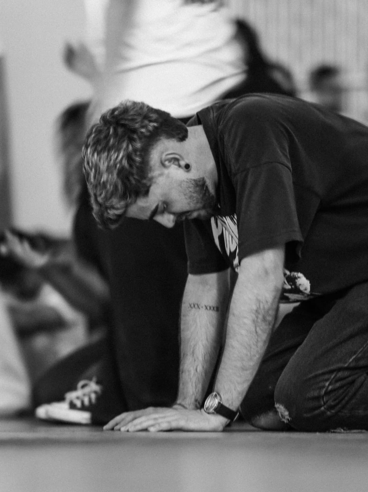

2017 · O quarto
“Abra o livro”
Eu havia perdido completamente o sentido da vida. Bebi, usei drogas e tomei remédios com a intenção de tirar a minha própria vida.
Meu corpo começou a apagar. Perdi os movimentos, não conseguia falar e fui tomado pelo medo. Naquele momento, achei que tudo havia acabado.
Então aconteceu algo que jamais esqueci.
Com o quarto fechado, senti como se um vento entrasse no ambiente. Logo depois, senti um toque no ombro. Naquele instante, fiquei sóbrio.
Era Jesus.
Ouvi uma voz que dizia:
“Abra o livro.”
Havia vários livros no quarto, mas um deles chamou a minha atenção: uma Bíblia empoeirada, que eu nunca lia. Eu havia me afastado de Deus e me tornado ateu.
Quando abri a Bíblia, havia um marcador exatamente em uma passagem grifada:
“Porque Deus amou o mundo de tal maneira que deu o seu Filho unigênito…”
João 3:16
E então ouvi:
“Se você não quer mais a sua vida, entregue-a Àquele que morreu por ela.”
Naquela noite, não encontrei apenas uma razão para continuar vivendo.
Eu encontrei Jesus.
E ali começou uma nova história.
Se você está pensando em tirar a própria vida, fale com alguém agora. O CVV atende gratuitamente, 24 horas por dia, pelo telefone 188.